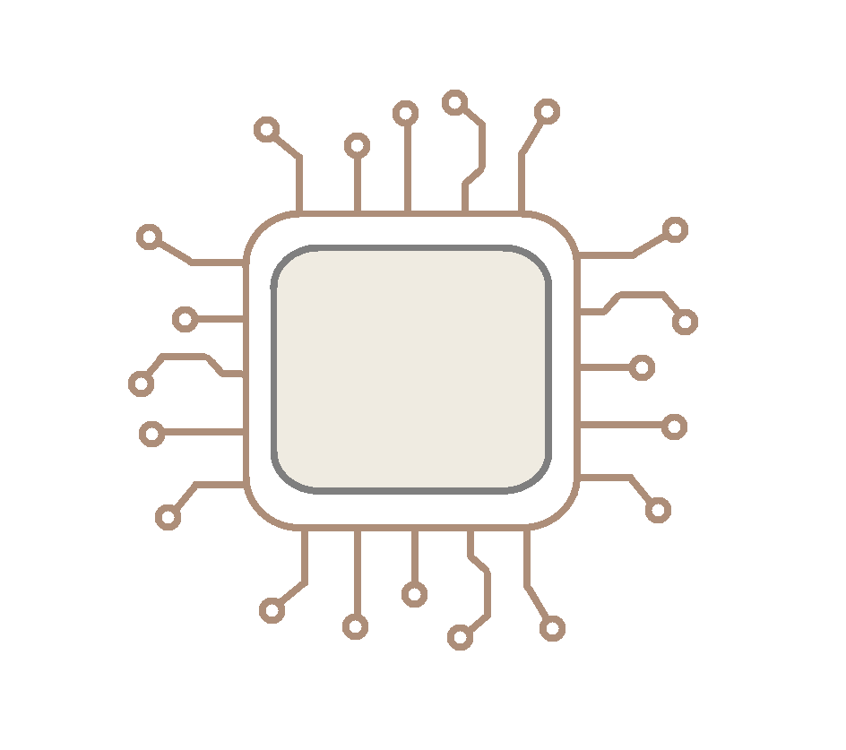

Server Chip Block
This block models GPU or CPU die(s) as a signal-level power source with a thermal port. It has no electrical ports and is intended for system-level thermal or energy studies.

Contents
Overview
Use the Processor Type parameter to select GPU or CPU mode. Both modes include temperature-dependent leakage power and reject heat through the thermal port H.
GPU mode:
P = P_idle + P_dyn * (2U - U^alpha)
This nonlinear model (Fan/Barroso 2007) captures the sublinear region at low utilization (memory/NVLink bound) and near-linear GEMM-bound behavior at high utilization. It includes HBM memory power scaled by memory utilization. Typical alpha values are 1.4 (NVIDIA), 1.6 (AMD), and 1.3 (Intel).
CPU mode:
P = P_idle + P_dyn * U^beta
This near-linear model captures CPU power as nearly proportional to utilization due to DVFS (frequency/voltage scaling with load). No HBM term is included. Typical beta is 1.1 for server-class x86/ARM.
Temperature-dependent leakage (both modes):
dP = k_leak * max(T - T_nom, 0)
This linear leakage model follows the Skadron/Stan 2004 HotSpot formulation.
Ports
- H --- Thermal (heat rejection to cooling network).
- U --- Utilization input (0 to 1).
- P --- Total processor power dissipation (signal, W).
- T --- Die junction temperature (signal, K).
Parameters
Processor Selection:
- Select processor type, processorType, enumeration. Options: GPU, CPU. Default: GPU.
- Number of GPU dies, numGPUs, scalar. Default: 4.
- Number of CPU sockets, numCPUs, scalar. Default: 2.
GPU Parameters (visible when processorType = GPU):
- GPU TDP per die, gpuTDP, specified in W. Default: 1200.
- GPU idle power, gpuIdlePower, specified in W. Leakage + memory baseline. Default: 300.
- GPU power-utilization exponent, gpuPowerExponent, dimensionless. Default: 1.4.
- HBM power per GPU, hbmPowPerGPU, specified in W. Default: 80.
- HBM utilization fraction, hbmUtilizationFrac, dimensionless. Fraction of compute utilization used for memory. Default: 0.7.
CPU Parameters (visible when processorType = CPU):
- CPU TDP per socket, cpuTDP, specified in W. Default: 350.
- CPU idle power per socket, cpuIdlePower, specified in W. Default: 80.
- CPU power-utilization exponent, cpuPowerExponent, dimensionless. Default: 1.1.
Thermal:
- Leakage increase per K above T_nom, PleakageCoeff, specified in W/K. Default: 1.5.
- Nominal die temperature at TDP, chipTnominal, specified in K. Default: 350.
- Die thermal capacitance (per die), chipCth, specified in J/K. Default: 50.
See Also
- datacenter.gpuPsuLoad --- GPU PSU Load model for impedance scan studies with AC electrical ports.
- datacenter.computeProfileSource --- Workload generator that drives the utilization input.